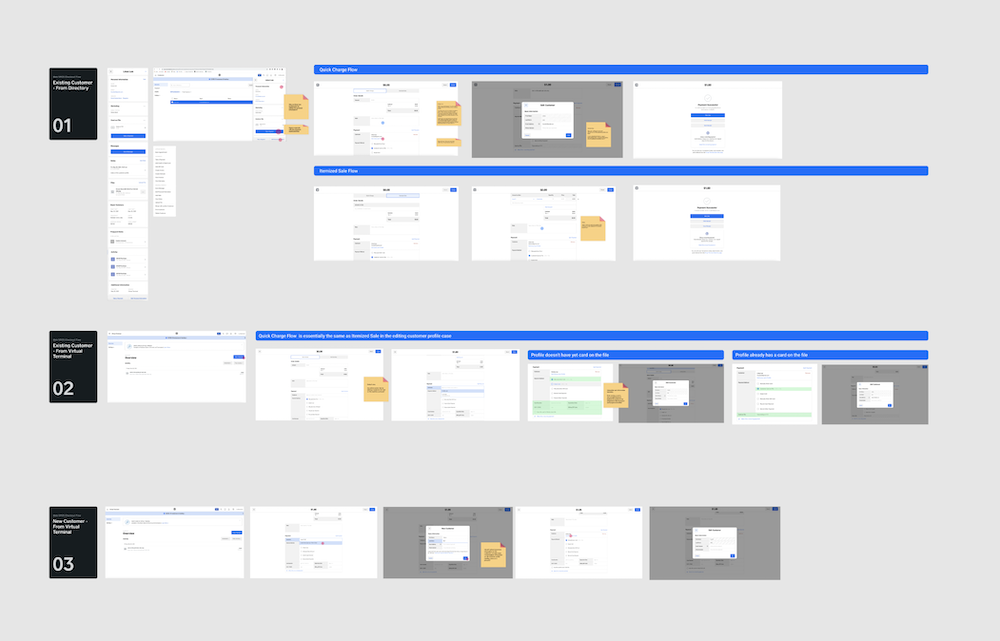
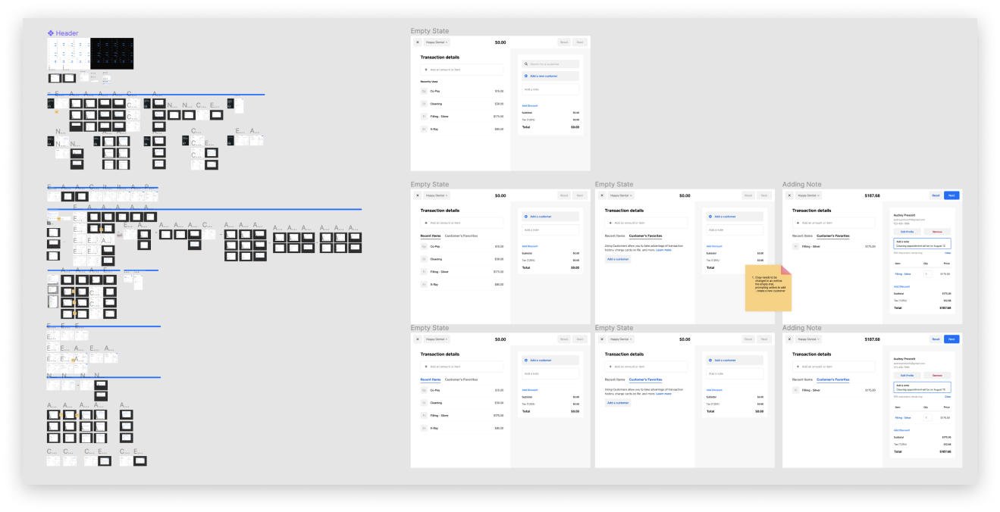
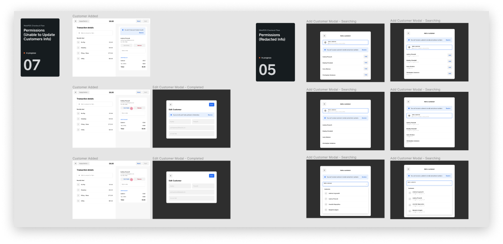
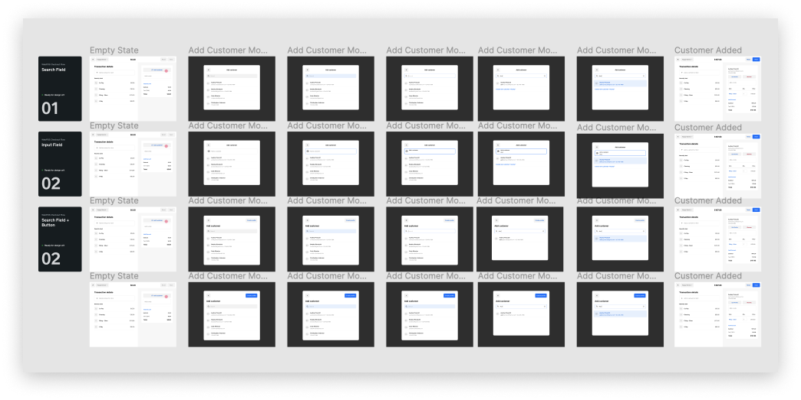

WebPOS Checkout Flow
Web Point of Sale is is the version of physical Point of Sale for Square sellers to access via their computer. It is a new updated version of Square Virtual Terminal. I was working on a customer's checkout flow.

Context
One of the larger changes to the flow involved breaking apart cart building and payment into two sections. Along with this, customers would have to be added via a modal, with new functionalities that include searching existing customers and creating new profiles. In this project I shipped add customer flow and contributed components to a new design system.
Process
From the initial disocvery research customers have expressed a clear need for an easier way to input, edit, and search customer information from the checkout flow. Client search is too much. I have to tab down 5 times to get to where I enter the customer card number." We quickly realized that the problem was also not in quick search of existing customers and surfacing their payment methods, but also in adding the value to editing fields as well as creating new customer profiles from that view. I have developed several hypotheses to help ideating divergent prototypes for further validation:
- Editing field can add more value to sellers if treated as a relevant point to add new or update information on the customer profile. For example, VT is popular among dental clinicians, who might want to add insurance information on their patient.
- Simplified customer filtering will ease the search for sellers, increasing a better adoption of the feature. This is informed by sellers that prefer to filter customers by segment or type (i.e. Blue Bottle doesn’t want to see the retail customers on WebPOS, but only the wholesale/B2B partners during the VT transactions on wholesale beans).
- Searching for customers that have recurrent charges might be valuable if it is the first step during the checkout flow. Customized transactions based on the existing customer’s information might be valuable. knowing that sellers use WebPOS for recurrent transactions.
Creating and updating customers in Virtual Terminal can be done from different workflow points. It was important to differentiate how each of them was different, if some fields are treated differently, and what is the current flow looks like. I explored adding a new customer from Customer Directory view, updating existing customer in both Directory and VT.
I started exploring happy paths of different use cases, narrowing down to the most essential features we would like to include, exploring various permission states from product and engineering conversations. A seller that don't have access granted to customers at all won't be able to create / add new profiles. Likewise, permission states also included handling customer's redacted information. It was also important to explore wording in copy to clearly communicate to sellers why they have restricted access.
 A particular process in this design project included a close collaboration with Design Systems team. Since Square was working on making an updated component library and some of the components were not fully developed / thought out in use cases, I had a chance to contribute new components to the team as well as think through different interaction use cases. We discussed questions around icons, typeahead on selection, hover states.
One of the challenging questions was to determine upon the Add Customer modal what is the right field to use: search field, input field, or search field with button. If search chosen, then we would have to add a new interaction affordance for sellers to create a new profile, while input field though having add functionality would have discoverability issue for sellers. We decided to go with and develop search field with button modal. From user testing, it was also much clearer for sellers the functionality of each component.
Through user testing all 8/8 paticipants successfully completed tasks with the new feature functionality. Though current solution solves the most essential needs for sellers, a pattern seen throughout all conversations included the need for a more customized fields, depending on seller's business: "customizable fields that might be specific to our business (loyalty or customer id number)," "remember Auman Browne's weekly rate and automatically pulled in for her would be very beneficial during the transaction,"if I could add more information like home address."
- Workflows need flexibility. Sellers have similar workflows but need to be allowed to tailor them directly to their needs.
- Keep things simple for sellers' clients. Sellers need a way to keep track of all client correspondence while keeping the process as simple as possible for their customers.
- Sellers want their workflow to be integrated. Sellers who manage client relationships are busy and want to stay organized and not miss out on the relationship building progress.